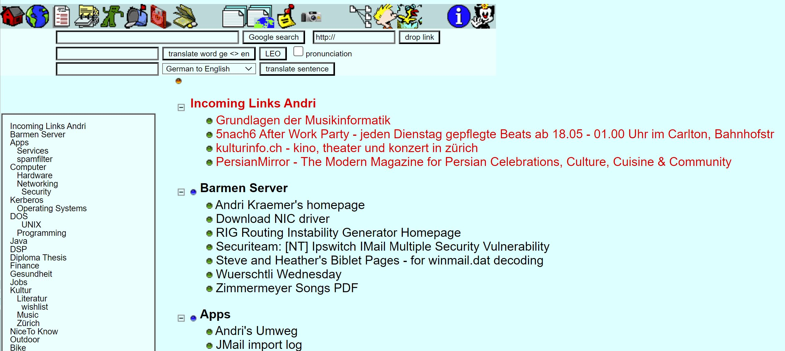

Andri’s Projects
Discover the projects I’ve brought to life over the years! Some may be a bit dated, but I found it fascinating to journey back in time and revisit the challenges that felt essential to tackle back then.
Categories
Projects
Patient
1991 - 1994
Early DOS software for patient management
My first software that was used productively was called ‘Patient’. I wrote it as a teenager in Turbo Pascal for my mother, who, in addition to being a housewife, also worked part-time as a self-employed physiotherapist. The DOS application was multicolored and could be operated with a mouse. We had an Intel 80386 DX 20 MHz computer with a 1 GB hard drive and a simple dot-matrix printer. With my patient management software, one could not only schedule appointments and do the accounting, but also directly fill out the yellow forms that had to be submitted to the disability insurance (IV) for billing. At the time, my mother was probably the only physiotherapist who sent forms to the insurance not handwritten but neatly filled out by a printer 😀.
The completely exaggerated title ‘Physikalisch-Therapeutisches Institut Ruth Krämer & Co.’ was, of course, meant as a family insider joke.
Categories
Ohr
1992 - 1994
Ear trainer for musicians
Music was always my great love. After high school, I went to the Jazz School in Lucerne, but later decided to pursue a degree in computer science at ETH Zurich. Ear training is essential in music, so I programmed ‘Ohr’, a software for ear training, which allowed users to practice recognizing intervals, chords and their inversions, scales, and so on. To make it possible to practice on the go (laptops didn’t exist yet), the software included a feature for creating exercises that could be recorded directly onto cassette. In parallel, the solutions were printed out so that one could practice with a Walkman and a sheet of paper wherever they wanted. The Sound Blaster card was the first to support speech synthesis and could be used with a text-to-speech command-line tool c:\sb\sbtalker\say.exe. So, to keep track during practice, every 10 exercises were announced.
Categories
Teltax
1995 - 1999
Dial-In modem costs calculator and splitter
To access the internet back then, you had to dial in via a modem over the phone line. There was a basic charge for establishing the connection and a per-minute fee with three different time-based pricing levels. Internet costs could quickly become very high, and if you lived in a shared apartment or worked remotely for an employer, you needed to know for each ‘internet session’ when it happened, how long it lasted, and who would be responsible for paying at the end of the month.
That’s exactly why I wrote Teltax. It was activated each time a modem connection ended, allowing you to specify whose account the costs should be charged to. The details were read from the technical log of the Win95 modem driver (e.g., c:\win95\ModemLog_Zeus 336E External 33600 Fax Modem.txt). Then, the costs were calculated based on the three different price levels and written into a log file. At the end of the billing period, a total cost per user was calculated. Additionally, the data volume was analyzed, and the cost per megabyte was calculated. Since charges were based on time rather than data volume back then, the goal was, of course, to keep the cost per megabyte as low as possible by truly using the connection and not keeping it open for too long.
Categories
PublicSecrets
1997 - 2007
The really social network before social networks
The World Wide Web was still in its infancy. There was no Google, no PHP, no WordPress, and no Facebook. But there was PublicSecrets—a blend of social networking and productivity platform. I began developing PublicSecrets in 1997 and continued to expand it over the years. It was used by all of my friends and even friends of friends
Features
- OpenAlbum
- Put your photos online. Select from different style templates. Decide whether the album should be public, restricted to PublicSecrets users, restricted to your friends, to a list of friends or private (‘secret’). Create slideshows. Get user comments. Add ‘order picture’ button (for print orders) and even use an album as gift list for weddings or birthdays (add ‘I give this to you as a present’ button that disappears when somebody has already clicked it). OpenAlbum provides detailed access statistics.
-
Years later, similar services such as Picasa (acquired by Google in 2004) were launched.
- Address Book
- Add entries and decide which of your friends you want to share each entry with. Duplicates are actively avoided: If you add an address that a friend has already added, you’ll gain access to the existing record instead of creating a duplicate. All friends have read and write access to shared records, ensuring that the data remains well-maintained and up-to-date. You’ll never forget a friend’s birthday, as PublicSecrets sends you email reminders and displays a list of upcoming birthdays after you log in. Addresses can also be grouped into address lists.
- Bookmarks
- Individual bookmarks / links can be shared and grouped hierarchically. The bookmark check tool reports invalid/outdated bookmarks.

- Notes
- Manage your personal notes.
- PSMail
- PublicSecrets Mail is a webmail client allowing you to create new mail accounts or registering existing (third-party) e-mail accounts. It provides full text search capabilities, shared e-mail accounts, aliases, mailing list management, virus scanning, spam filtering and folders.
-
PSMail was available long before Gmail or Yahoo Mail.
- PSFile
- Files can be shared with other PublicSecrets users. All uploads are scanned for viruses. Files can be encrypted using individual passphrases. PSFiles can also be attached to PSMail messages.
-
The PSFile cloud file store was already available when the word ‘cloud’ had no other meaning and there was no Google Drive, Dropbox or Microsoft OneDrive.
- PSEvent
- For the legendary Würstli Wednesday events, I built a somewhat sophisticated event management system into PublicSecrets. It works like this: You can define a new event in PS, including a description, date, time, etc. Afterwards, you add items (e.g., beer, potato chips, potato salad) to the event and determine how many participants are needed per item (e.g., potato chips for every 3 participants, potato salad for every 10 participants, etc.). Using the PS address book, you can invite guests and send them an invitation via PSMail. On the event homepage, guests can sign up or opt-out. For events with gadgets, each guest can see which gadgets are currently needed and select which one(s) they would like to bring themselves. All guests can see who has signed up or opted out and who is bringing what. The ultimate tool for “self-organizing parties”.
- PSAccounting
- Create a cash book, assign people from your address book as members and start your shared accounting. Each entry has a date, an amount, a member involved as creditor and one or more involved as debtors. At each moment, any member can see the current total of expenses and debts and how much who would have to pay to whom in order to re-balance the account (pay off all debts with the smallest number of transactions).
- This was exactly what later became popular with apps like Splittr - but years before the iPhone was invented.
- PSDocs
- Upload any zipped documentation. It gets unzipped and indexed by the built-in full-text search engine.
- The best thing, software develpers could dream of at that time to quickly browse JavaDocs etc.
- PS GarbageAlert
- Reminds you of the waste paper or cardboard collection dates for the district you live in. Only for Zurich.
-
Years later, ERZ (Entsorgung + Recycling Zürich) came up with a similar service.
- PSVote
- Ideas for extensions are proposed here and all users can vote on them.
PublicSecrets was written in ColdFusion and ran on a Windows NT server.
Categories
WiiMIDIi
2007 - 2008
Using a Nintendo Wiimote for guitar motion sensing and converting accelerometer data to MIDI
For our concerts with Amtsbladt, a Swiss electro-pop duo where I was responsible for composition and music, and my friend Phil handled lyrics and vocals, I wrote software to convert the movements of the guitar neck into MIDI signals. I had attached a Wiimote to the guitar head. With quick movements in different directions, I could trigger samples, and with slower movements, I could control parameters of the guitar effects. In addition, I could use the Wiimote buttons to control Ableton Live (start tracks).
flowchart TD
A1[Wiimote] -->|Bluetooth| B(Computer)
B --> C{WiiMIDIi}
C --> |MIDI| D(Ableton Live)
C --> |MIDI| E[NI Guitar Rig]
There’s nothing more boring at concerts than guys on stage sitting behind a laptop. As an audience member, you have no idea if what they’re doing has anything to do with what you’re hearing or if they’re just checking their emails or stock prices. That’s why I was behind the guitar and not behind a computer.
For the Guitar Rig Hero Contest by Native Instruments, I demonstrated my setup in a rather silly video 🤣.

Categories
Gschichtefritz
2009 -
Audio stories with songs for children
Under the artist pseudonym ‘Gschichtefritz’, I wrote over 70 Swiss-German audio stories with songs. I narrated each story, sang the songs, and produced everything in my own studio. My distribution method was one of a kind: each story was prepared on-demand, complete with a personal dedication in the introduction. For example, “This story is for Anna, a gift from Uncle Fred.” The stories were available on CD and/or as MP3 downloads, with payment on a voluntary, pay-what-you-want basis. This system was supported by sophisticated software, which I developed and continuously enhanced over 15 years with new features.
However, as CDs became less popular over time and I wanted to streamline my involvement, I made a pivotal change in 2023. I decided to end the physical distribution and personal dedications. Instead, I rebuilt the software from the ground up on a new technology stack, focusing on core features. Therefore, I now distinguish between two projects: ‘gschichtefritz.ch legacy’ and ‘gschichtefritz.ch current’.
Categories
Gschichtefritz App
2020 -
Gschichtefritz audiobook player app for iOS and Android
Gschichtefritz offered MP3s from the very beginning. However, with the rise of streaming services, it became clear that customers were finding it increasingly challenging to download MP3s and transfer them to iPods, tablets, or smartphones. To address this issue, I developed a player app in 2020. The free Gschichtefritz App lets you download all your stories, so you can listen to them offline whenever you want. It’s also designed to be easily operated by young children, even those who can’t read yet.
Framework: Xamarin, 2023-2026: Maui, 2026-today: Flutter/Dart
Programming Language: C#, now Dart
Platforms: iOS and Android
Categories
gschichtefritz.ch legacy
2009 - 2023
CRM, shop, CD burner automation, accounting, and more
Some numbers (2009-2023):
- Total orders: ~55’000
- Total CDs burned and shipped: ~75’000
- Total stories ordered: ~200’000
- Although payment was optional, about 80% of CDs and 70% of MP3s delivered sooner or later were paid for (with the amount chosen by the customer)
Read countless testimonials from enthusiastic customers (in German).
The legacy gschichtefritz.ch code was written in Java and included a wide range of modules and functionalities. Here’s an overview.
mindmap
root((GF legacy))
Shop
Regular Shop
Promo & Event Shops
Live orders at events
Coupons
Mass Orders for institutions
FB & Insta integration
Website
News: live sync from FB
Childrens drawings album: sync from FB
Live Events
Static CMS Pages
Email
Shop related Emails
Newsletters
Reminders
App Backend
Vaadin Admin UI
Accounting
Processing
TWINT
QR Bill
Stripe
Paypal
Postfinanace
camt files
Double entry bookkeeping
Reporting
Annual financial statements
Balance sheet
Income statement
Audiostore
Audioautogram
Recording
Delivery
Story
Concatenation
WAV & MP3 Encoding
Delivery Factory Client
CD Burning
Printing Letters
PDF
Letters and Invoices
Coloring pages
Inventory
Categories
gschichtefritz.ch current
2024 -
Shop and App backend
The current gschichtefritz.ch code is written in Python, utilizing FastAPI and Pydantic. It went live in January 2024. Functionality and complexity have been minimized. Payment options have been simplified to QR bill only. Accounting continues to be managed with the legacy software. With digital delivery only and no more personalized audio autographs, the entire process now runs fully automated, without any human interaction.
Here’s an overview.
mindmap
root((GF current))
Shop
Login
QR Bill
Delivery: PDF
Processing: Activate order
MP3 Download
Website
Email
Shop related Emails
App Backend
Onboarding
Delivery
In August 2025, the ecosystem has been expanded with the introduction of Gschichtefritz Affiliate .
Categories
Gschichtefritz Affiliate
2025 -
Stand-alone affiliate programme for gschichtefritz.ch with full configurability and integration into the existing shop and app backend
Gschichtefritz Affiliate
The Gschichtefritz Affiliate system runs as a standalone web application that integrates seamlessly with the existing shop and app backend.
Affiliates can register and access a live dashboard to track their performance. In the default setup, affiliates earn:
- A fixed commission for every new customer they bring in
- A percentage of all revenue generated by those customers during their first year
Customers benefit as well, receiving a bonus package of free stories and a discount on all purchases in the first year.
The programme is fully configurable:
- Commission amounts, revenue share percentages, and timeframes
- Bonus packs and their contents
- Other conditions tailored to specific affiliate groups
Technical Integration
The affiliate system was designed to require minimal changes to the existing shop and app backend codebase.
- The Affiliate Server exposes an API to the main application, providing affiliate configurations for:
- Rendering the public affiliate information page
- Applying rebates in the shopping basket
- Granting access to bonus package content
- Rendering the public affiliate information page
- The shop reports back to the Affiliate Server whenever:
- A new customer registers through an affiliate
- A purchase is made by an affiliate-linked customer
- A new customer registers through an affiliate
Data Management
While the data models and application code are kept separate, all data resides in the same PostgreSQL database using dedicated schemas.
This approach ensures:
- Minimal interference during development
- Maximum flexibility for reporting and data analysis
Here’s an overview.
sequenceDiagram
participant Affiliate
participant AffiliateApp as Affiliate Application
participant ShopApp as Shop Application
participant Customer
participant DB as PostgreSQL (separate schemas)
%% Affiliate registers
Affiliate->>AffiliateApp: Create profile / Register
AffiliateApp->>DB: Store affiliate profile
ShopApp->>AffiliateApp: Fetch and cache affiliate configs
%% Customer visits affiliate page
Customer->>ShopApp: Visit affiliate public info page
%% Customer registers via affiliate
Customer->>ShopApp: Register (via affiliate link)
%% Customer downloads free stories
Customer->>ShopApp: Download free stories (bonus pack)
ShopApp->>AffiliateApp: Notify event (new customer acquired)
AffiliateApp->>DB: Store new affiliate-customer relation
%% Customer makes a purchase
Customer->>ShopApp: Purchase product
ShopApp->>AffiliateApp: Notify event (purchase by affiliate-linked customer)
AffiliateApp->>DB: Store purchase / commission
ShopApp-->>Customer: Apply rebate
%% Affiliate dashboard
Affiliate->>AffiliateApp: View dashboard / stats
AffiliateApp->>DB: Query affiliate data
AffiliateApp-->>Affiliate: Show commissions, revenue
Note over ShopApp,AffiliateApp: API-based integration
Note over DB: Shared database<br/>separate schemas
Categories
VisualMix
2022 - 2022
Mix and arrangement of a song visualized
Idea
In 2022, I recorded a new song with the same friends with whom I had recorded the Dino Songs CD ten years earlier: “10 chlini Rägetropfe” (10 Little Raindrops). The song has great dynamics and a varied arrangement, making it quite tricky to hear exactly when each instrument comes in or drops out. That’s how I got the idea to make this visible for listeners in a video! During my readings at schools, I like to explain to students how multitrack recording works and then show them the video. Below, I’ll briefly explain how I did it.
Tracks
The song consists of 9 audio tracks: vocals, 3 guitar tracks, bass, accordion, piano, harmonica, and drums. Strictly speaking, the drum track is a so-called group track, which itself is made up of several individual tracks (bass drum, snare, etc.) as well as additional percussion tracks (tambourine, etc.). For simplicity (and because it’s not possible to record them separately with an acoustic drum kit), these have been combined into a single track.
Track analysis
In the first step, I calculated the volume information (RMS values) from each track, as I’ll need this for the animation later. Here’s what that looks like: The diagram shows the volume of each track over the entire duration of the song, indicating when and how loudly each one is present in the mix. I also assigned an appropriate instrument image to each track (for the vocals: a microphone). For each track, I needed coordinates for where the instrument image should appear. Since I’m using the cover illustration with the cloud and raindrops as the video background, I placed the instruments on individual “raindrops.” Instruments that are heard more on the left in stereo/headphones are assigned coordinates for raindrops on the left side. Drums and bass are centered, as is the vocal.
Generating images
In the next step, I create the images. A video essentially consists of individual images displayed in rapid succession so that the brain perceives them as continuous motion. A typical frame rate is 25, meaning 25 images per second. For the entire song, which is 231 seconds long, I need around 5,800 images. These are “assembled” one by one like a collage, with the size of each instrument at any given moment reflecting its volume—essentially, the “amplitude” shown in the track plot above. Each instrument image has a maximum square size limit so that they don’t overlap too much. For instance, when an image reaches its maximum width, it can still grow in the other dimension (height) until it forms a square. This effect can be seen with the bass guitar, which becomes thicker rather than longer during loud notes.
The 5,800 images are saved sequentially. For example, the 3,000th image, saved as frame_03000.jpg, represents the song position at 2 minutes and 0 seconds (120 seconds), because 120 seconds * 25 frames = the 3,000th image.
To make all instruments briefly visible at the very start of the song (when the drums are still creating quiet wind and rain sounds), I replaced the images for the first two seconds with a small “instrument shrink” animation.
Creating the video
In the final step, I simply needed to convert the 5,800 images along with the fully mixed audio track into an MP4 video. The result looks like this: YouTube.
Code
Want to know exactly how I did it? You can find the program code here: GitHub link: VideoGeneratorForMultiTrackAudio.
Categories
Dino Stampf Deep Learning
2017 - 2017
Pre-LLM AI generated pseudo-Swiss German lyrics
Idea
The machine is meant to become the artist, and Gschichtefritz will present this “machine art” to explore the boundaries between artificial intelligence and artistic intelligence.
Note: The Transformer architecture, and thus the Large Language Models (LLMs) like GPT based on it, did not exist at that time.
Concept
The song Dino Stampf Stampf, now with 35 verses (from the children’s stories of the Blue Dino), will serve as a “large existing dataset” / “Big Data.” The computer is meant to learn from this text alone. It won’t receive any additional information about language, words, grammar, or anything else. Afterward, the computer should generate text on its own.
Result
I read the generated text aloud a video:

Occasionally, words or short phrases from the original text appeared, followed by various word mixes or entirely new words that still sounded like Swiss German. The result reminds me of Dadaism and Franz Hohler’s Totemügerli, with the difference that the text wasn’t created by a human but was written by a computer within milliseconds.
How Does It Work?
I used a character-based Recurrent Neural Network with Long Short-Term Memory cells, or “LSTM RNN.” Character-based means that instead of feeding words into the computer, we give it individual characters. Since capitalization is irrelevant for this task, I converted all letters to lowercase. For instance, “Gmües” becomes “gmües,” reducing the song’s character vocabulary to 38 distinct symbols (lowercase letters “abcdef…z,” umlauts “üöä,” punctuation, spaces, and line breaks). The neural network is then trained to predict the next character by providing it with the current text and the correct answer, character by character. In machine learning, this is called “supervised learning,” where the network receives both input and the correct output during training.
Here’s a step-by-step example: The network should learn from the text “gmües iss ich de ganzi tag.”
Training:
- The first character (“g”) is provided as input, with the “correct answer”—the expected output—being the next character, “m” from “gmües.” It’s like saying, “If you want to learn what I’m teaching, you first need to know that after ‘g’ comes ‘m.’”
- The second character, “m,” is given as input with the expected output “ü.” It’s like telling the network, “If you see an ‘m’ and previously saw a ‘g,’ you should output ‘ü’.” The network must remember the “g” from the previous step, hence the use of a “Recurrent Neural Network,” which relies not only on the current input but also on the sequence of previous inputs. LSTM cells provide the ability to store this context information.
- The third character, “ü,” is given as input with “e” as the output.
- The fourth character, “e,” is given as input with “s” as the output.
- The fifth character, “s,” is given as input with a space ” ” as the output. By now, the network has learned the word “gmües” and that it should be followed by a space. This process is repeated across the entire 6,662-character song many times. I deliberately left out the chorus.
Sampling:
Next, we feed the neural network an initial sequence (e.g., “wa”) and repeatedly ask for the next character. This quickly results in a text of any desired length.
A neural network’s quality isn’t judged by how well it memorizes the input. Memorizing is trivial for a computer. The goal is to learn something general, producing fitting output even for previously unseen input. This also influences training. If the network’s settings (hyperparameters) are unsuitable or the training period is too short, it will underfit, generating short, random-looking character strings, like “wai se ee i i snnih.” At the other extreme, if the network memorizes too much and is overtrained, it will largely replicate the original text it was trained on.
Those familiar with the song may recognize in the generated output certain original phrases, alongside amusing, Swiss German-sounding words like “nürzs” or “gmüch,” or word variations like “furke” instead of “gurke.” The “denttergine” probably has something to do with an eggplant, and the “himbeerine” would certainly be something the Blue Dino would love to try.
This was inspired by Andrej Karpathy’s blog post The Unreasonable Effectiveness of Recurrent Neural Networks.
Categories
Brainwaver: Pink Noise
2013 - 2013
Nothing but binaural pink noise to get into the flow and focus
Back in the mid-90s, while studying at ETH, I always carried a cassette with self-generated pink noise for my Walkman (I used Cool Edit for that). Later, of course, it was an MP3. In 2013, there was an opportunity to release an EP for free on Spotify and other streaming platforms. I used this to publish my pink noise tracks online under the name ‘Brainwaver’, so there’s no need for copying MP3s anymore.
I listen to the tracks through headphones whenever I want to focus in a noisy environment or just unwind and relax. Pink noise masks external sounds and, unlike music, doesn’t distract. White noise has an evenly distributed intensity across the frequency spectrum (which can sound quite harsh). With pink noise, the intensity decreases as frequency increases; the lower frequencies are louder, while the higher ones are softer, creating a more pleasant sound—similar to a waterfall.
There’s a theory that the binaural modulation of noise, when listened to with headphones, can cause brain waves to synchronize with the modulation frequency, potentially inducing certain mental states (e.g., relaxation or heightened concentration). I’m not sure if that’s true, but binaurally modulated noise sounds less monotonous than pure pink noise—kind of like a helicopter circling above a waterfall.
Listen to Brainwaver: Pink Noise on Spotify or Apple Music
Categories
batGPT
2024 -
Write assessment reports for assistive technologies using AI
batGPT is an AI tool for writing assessment reports for assistive technologies, using large language models (LLMs). By selecting keywords and entering short text fragments, a draft report is generated, which can then be manually completed and refined. The screenshot shows an example of such a draft
This application was developed for b-at Beratung assistive Technologien in 2024 and is being enhhanced and improved regularly, using the latest AI models and capabilities.
Categories
docGPT
2025 -
Write structured documents and reports with just a few clicks and keystrokes
There’s a dedicated page for this project: docGPT
Categories
mts
2025 -
A tool for electronic billing in the Swiss healthcare system
There’s a dedicated page for this project (in German): mts
Categories
tl-qrbill
2025 -
An extension for the teamleader CRM/ERP to generate Swiss QR-Bill slips
There’s a dedicated page for this project (in German): tl-qrbill
Categories
bringo
2025 -
The perfect platform for ‘self-organizing’ events. Who’s coming? Who’s bringing what? Bringo takes care of it all.
Bringo is written in Python, using the Reflex framework. There’s a dedicated page for this project (in German): bringo
Categories
chat-export
2024 -
My father asked me how he could print his WhatsApp chat history with my late brother. I had to realize that this was not possible, and there was no useful free tool to archive or print a chat in a nice format. So, I wrote one.
chat-export is an open-source tool written in Python. The website is built using an AWS Lambda function that retrieves the project’s README markdown from GitHub, converts it to HTML, and returns it as a complete, properly formatted HTML page.

Categories
Anelec
1985 - 1990
My first company at the age of 12
A funny memory I found at my brother’s place in 2024: A catalog from 1986, when I was 13 years old. I already had a ‘company’ named ‘Anelec’ (derived from Andri Electronics). I etched circuit boards at home in the laundry room and sold kits and electronic circuits at school. I remember that the mother of a classmate was quite shocked when I sold her son a light organ with the note ‘220 volts! Danger of death!’ and some drawn skulls on the circuit board 😀.
Categories
Running Wheel Tracker
2018 - 2018
Pet cage upgraded for the IoT era
We have three degus, and in their three-story cage, the animals have various climbing options as well as a running wheel and two spinning plates.
Activity tracking
Are they really only active during the day? When and how much do they run? I wanted to know for sure, so I installed sensors in their running wheel and on their two spinning plates, where they run their laps daily. I connected the sensors to a microcontroller and programmed it to send rotation data to my server, which generates charts that I can view from anywhere.
flowchart TD
A1[Running Wheel] -->|Hall Effect Sensor Signal| B(ESP32 Microcontroller)
A2[Spinning Plate 1] -->|Hall Effect Sensor Signal| B(ESP32 Microcontroller)
A3[Spinning Plate 2] -->|Hall Effect Sensor Signal| B(ESP32 Microcontroller)
B --> |WLAN| C{Web Server}
C <--> D(Database)
C --> E[Statistics Dashboard]
This way, I know when they run their laps—and how many laps they complete. Does that sound absurd? Kind of. Many people track their fitness with pedometers and similar devices, even though they should already have a pretty good sense of how far they’ve walked, considering they take the steps themselves. It’s different with pets. What do they actually do during all the hours I spend at work or asleep? No idea. It could be interesting, right?
The chart shows activity grouped by time of day. From 9 p.m. to 7 a.m., they actually sleep. During the day, and especially in the early evening, they run quite a lot. Over 30 days, the animals ran a total of 200,000 laps. Technical details: On the back of the running wheel, I attached a small magnet and on the stationary part, a Hall effect sensor. This is connected to an ESP-32 microcontroller, which tracks the laps and reports them to the server.
Behavior during vacation
During a fall break, the degus (apart from brief “feeding visits” from the neighbor) were alone at home. The following chart shows the number of laps per day. The animals were much less active during our absence, from October 7 to 12, than they were before. Was it because of the light, since it was darker in the apartment? We had the shutters partially closed. On the next occasion, I tried it with more light, but even then, the degus were much more passive when they were alone at home.
Audio stories for degus
The next hypothesis was, therefore: the quieter it is in the apartment, the less active the degus are. To test this, an installation was needed that would play audio for the degus at a specific time during the second week of vacation. This required a device that would automatically start playing when powered by a timer.
The Gschichtefritz audio stations I built for public libraries met this requirement. So, I quickly connected an audio station to an amplifier, linked both to a timer, and set it to play Blue Dino stories near the degu cage in the mornings from around 7–8 a.m. and in the evenings from about 6–7:30 p.m. There was also a reason why the degus could only listen to stories at these off-peak times: during the second vacation week, the building manager was supposed to visit the apartment at some point to repair a broken shutter. He probably would have thought we were completely nuts if children’s stories about the Blue Dino started playing next to the degu cage while he was there…
When the Blue Dino plays, they run
The following three charts show how many laps the degus ran at different times of the day in the days that followed.
- Day one: Until the installation was activated at noon, the degus were passive. But when the Dino stories began playing in the evening around 6 p.m., the degus started running—and only for as long as the stories were playing.
- Day two: The animals were active precisely during the times the stories were playing.
- Day three: The same behavior pattern appeared again.
Whether this was because they recognized my voice or if they would have run to Beethoven or The Rolling Stones as well still needs to be investigated…
Categories
easypaste
2025 -
Your ultimate clipboard sidekick for presentations, coding demos, and tutorial recordings. This lightweight, open-source tool, built in Rust, lets you load a text file with custom delimiters and then paste segments one-by-one via global hotkeys—no retyping, no fumbling with copy/paste. It also shows a preview of the upcoming segment (with optional internal notes visible only in console).
easypaste is an open-source tool written in Rust. The website is built using an AWS Lambda function that retrieves the project’s README markdown from GitHub, converts it to HTML, and returns it as a complete, properly formatted HTML page.
Categories
shuffle_spotify_playlist
2022 - 2022
Create a shuffled copy of your Spotify playlist - the reliable way to avoid repeats during playback.
When planning a party — whether for friends, colleagues, or clients — I usually take care of the music myself. I enjoy curating playlists and selecting songs that fit the occasion and mood. For me, music is too important to rely on AI-generated or generic playlists. I want the experience to feel intentional and personal.
However, I kept running into the same problem: after assembling a playlist of 80-120 songs, I’d notice that similar tracks or songs from the same artist often ended up grouped together. That’s natural — it reflects the way we think while adding songs. But it doesn’t make for a good listening experience.
Shuffle mode in Spotify seemed like a quick fix, but it caused another issue: when the playback is stopped (e.g. during a dinner or speech) and resumed later, Spotify doesn’t remember which songs have already been played. As a result, some tracks repeat, while others don’t get played at all.
To avoid this, I wanted a way to shuffle the playlist once and then play it in regular, sequential mode — ensuring all songs are played once, in a good order, without repetition. Doing this manually for large playlists is tedious and time-consuming.
That’s why I wrote a small Python script in a Jupyter Notebook to automate the process. It connects to your Spotify account, takes a playlist, shuffles it once, and saves the shuffled version as a new playlist. This gives you a great base to start from — and you can still reorder a few songs manually if you like.
You can find it on GitHub:
🔗 github.com/mtln/shuffle_spotify_playlist